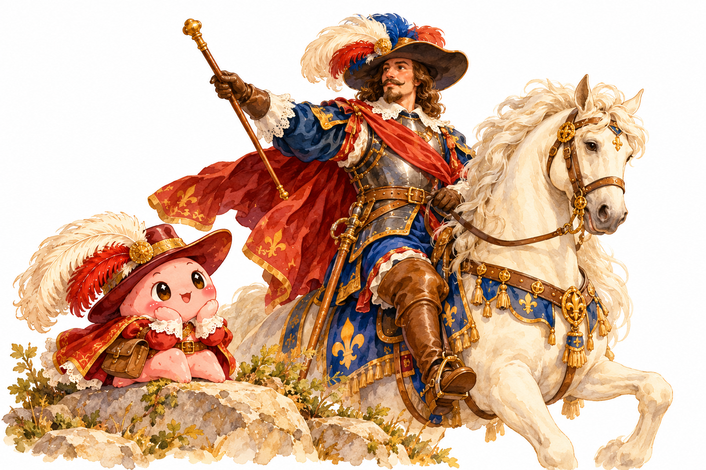
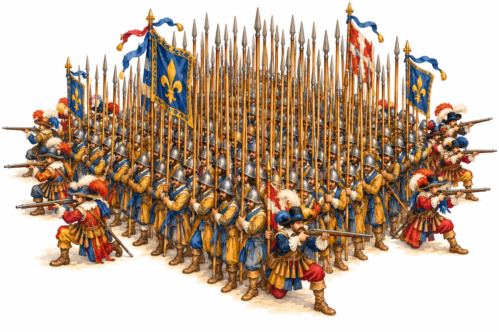
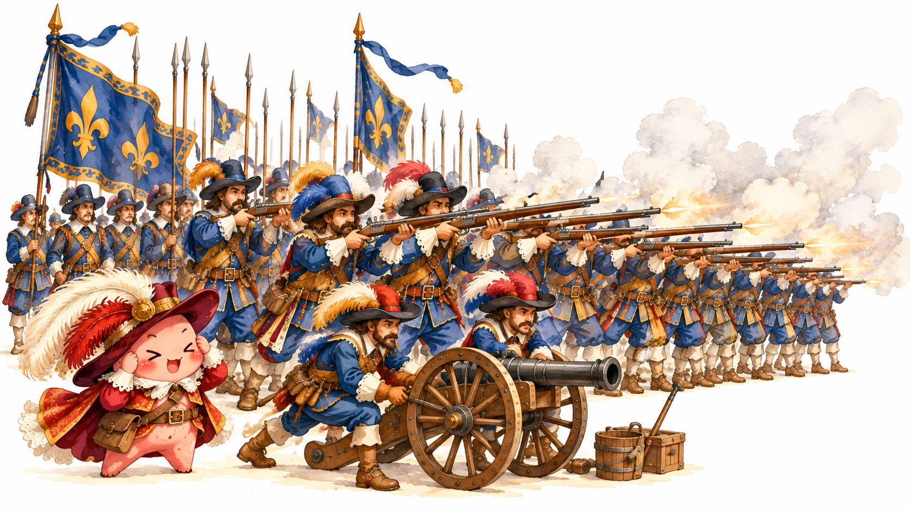
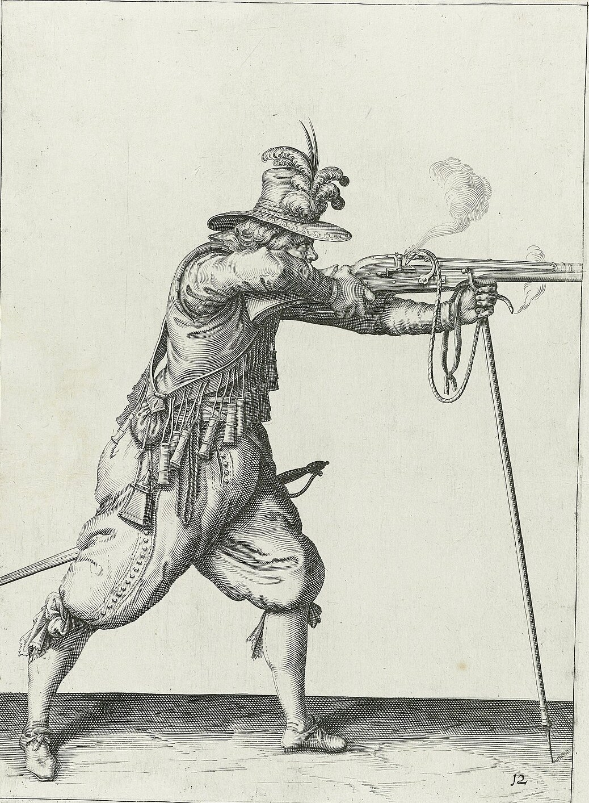
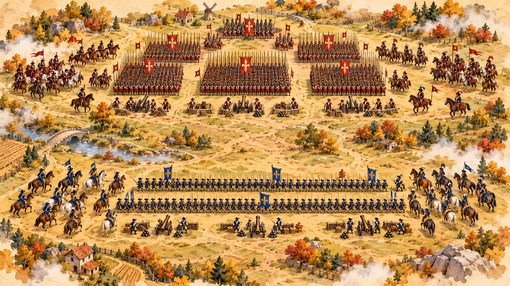
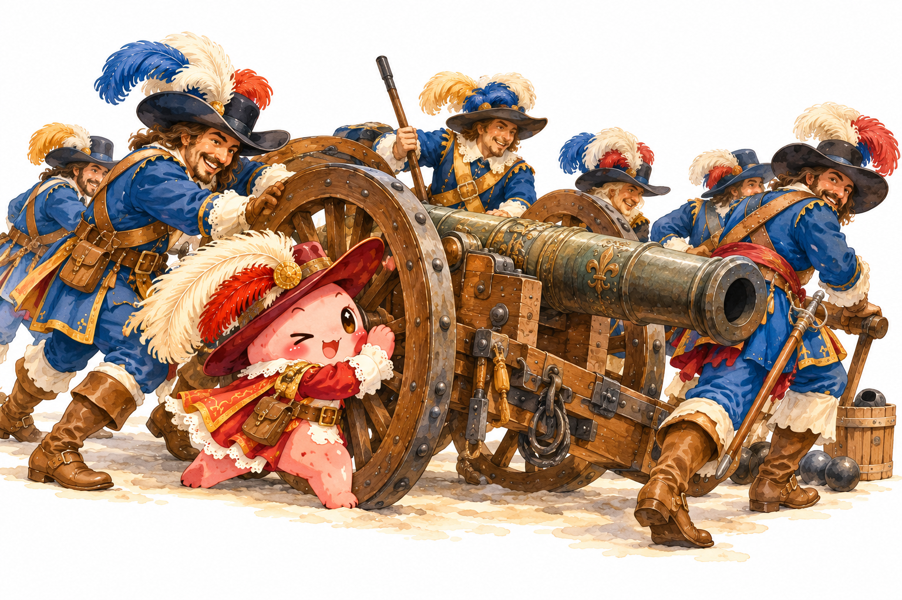
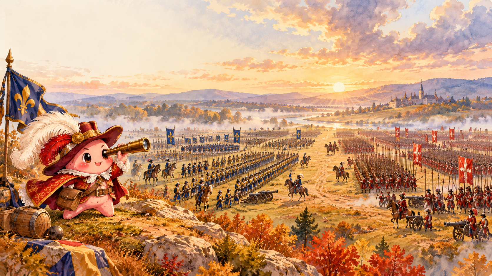
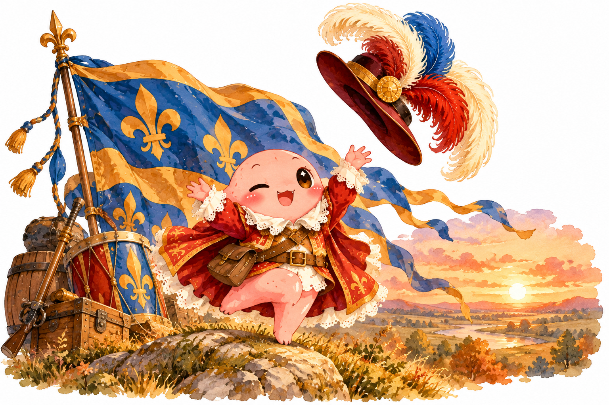

Шведы и саксонцы
Протестанты
- Командир
- король Густав II Адольф
- Союзники
- саксонцы курфюрста Иоганна Георга
- Воинов
- около40 000
- Пушек
- более 60, много лёгких
- Построение
- длинные линии
Как «военная революция» выиграла сражение
Деревня Брейтенфельд под Лейпцигом, Саксония (Германия)
Протестанты
Католическая лига и император

король Швеции в 1611-1632 годах






На один залп противника шведы отвечали тремя.
Полковую пушку быстро перевозили по полю.
Мобильная артиллерияСтреляют почти все солдаты, а не крайние ряды.
Отказ от «квадратов»Постоянная армия перестроилась прямо в бою.
Постоянная обученная армияСвои руда и заводы давали пушки и ядра.
Железная руда Швеции
Столько было графу Тилли. До Брейтенфельда он не проиграл ни одной большой битвы.
Их отправили в Стокгольм, в церковь Риддархольмен.
Через год, в 1632 году, Густав Адольф погиб в битве при Лютцене.
Терция: большой квадрат из пикинёров и мушкетёров.
Захватили и развернули их против армии Тилли.
Они были лёгкими: их придавали каждому полку и быстро перевозили по полю.
Брейтенфельд показал: побеждает не самая большая армия, а самая обученная и современная.
